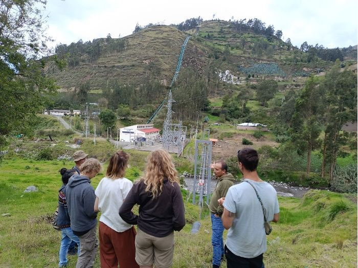
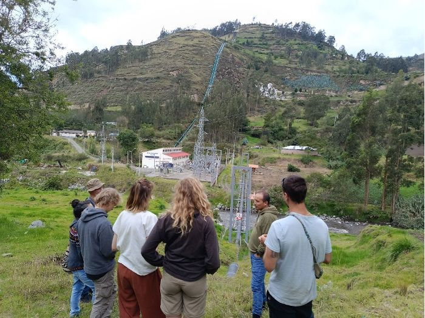
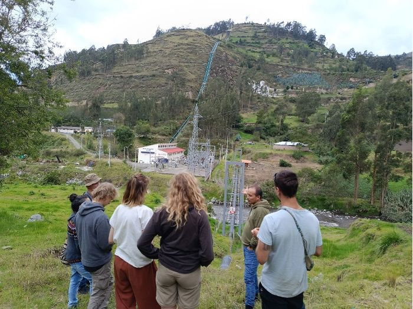

Comparto el resumen de mi investigación sobre la gestión participativa del agua en comunidades indígenas. El artículo completo está disponible para descarga y pueden ver imágenes del trabajo de campo.
 

Conectando conocimiento, comunidad y acción para la gestión sostenible del agua.
Un espacio de encuentro colaborativo para investigadores y comunidades afectadas por injusticias hídricas
El Observatorio Politécnico del Agua (OPA) busca ser un espacio de encuentro colaborativo en donde confluyan investigadores/as y académico/as bajo intereses y enfoques congruentes y complementarios alrededor de la investigación crítica.
Pretendemos tender puentes entre la investigación inspirada desde la Ecología Política y las comunidades campesinas de Chimborazo y la región aquejadas por injusticias hídricas.
Nuestro trabajo se basa en los principios de la investigación-acción como sustento metodológico que da forma a un Observatorio con relaciones horizontales entre todos los actores que lo conforman.
Redes horizontales entre investigadores y comunidades
Enfoque crítico sobre los problemas del agua
Metodología que integra conocimiento y práctica
Construcción de propuestas para escenarios más justos
Artículos, investigaciones y novedades de nuestra red

Comparto el resumen de mi investigación sobre la gestión participativa del agua en comunidades indígenas. El artículo completo está disponible para descarga y pueden ver imágenes del trabajo de campo.

Actualidad, eventos y novedades del Observatorio
Representantes de 10 comunidades se reunieron para dialogar sobre la gestión hídrica en Chimborazo.
10 Ago 2025 Leer másEl equipo OPA presentó avances sobre justicia hídrica en el foro de Ecología Política.
5 Ago 2025 Leer másYa está disponible el último artículo sobre desafíos de la gobernanza hídrica en la región.
1 Ago 2025 Leer másForma parte de la comunidad OPA y conecta con personas, proyectos y conocimiento sobre el agua.